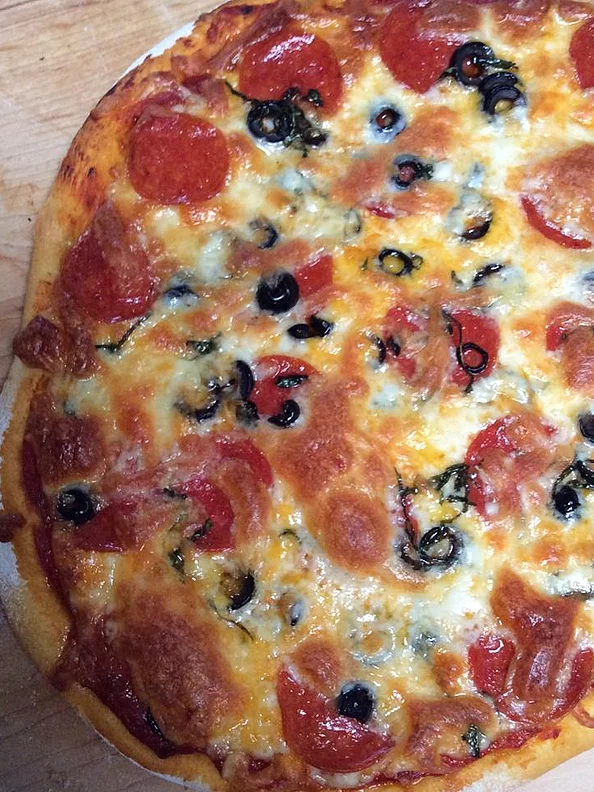

Pizza Dough

Follow this recipe to make some of the tastiest pizza dough ever!
Ingredients
- 2 cups of flour
- 2 1/4 tsp of instant yeast
- 3/4 cup of tepid water
- 2 tsp of salt
- 3 tbsp of olive oil + more to coat dough
Steps
- Add the yeast to the tepid water in your mixing bowl and let sit for 5 minutes until foamy
- Once foamy add the flour, olive oil and salt
- Using either wooden spoon and your hands, or stand mixer and dough hook, knead the
dough until it is uniform and pulling away from the bowl and not sticky
- Shape the dough into a ball and coat it with olive oil and leave in bowl covered
to rise for 3 hours
- Preheat oven to 500 degrees F
- Once risen, roll out the dough into the shape of the pan you'll be using
- Coat the pan with olive oil and place dough onto pan
- Add whatever ingredients you love to the dough and finish with the cheese
- Place pizza in the oven for 8-10 minutes and cook until dough is crispy and cheese is bubbling
- Once done, let cool briefly and enjoy!